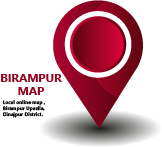
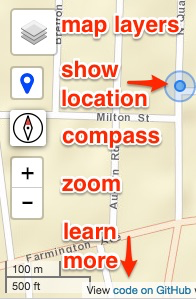
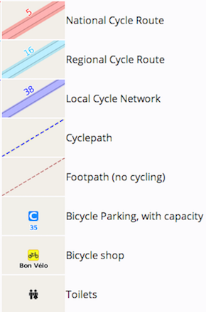

<!DOCTYPE html>
<html>
<head>
  <title>Birampur</title>
  <meta charset="utf-8" />

  <meta name="viewport" content="width=device-width, initial-scale=1.0">
  <link rel="shortcut icon" href="images/favicon.ico" type="image/x-icon">

  <link rel="stylesheet" href="css/leaflet.css" />
  <link href="css/L.Control.Locate.min.css" rel="stylesheet">
  <link href="https://ajax.googleapis.com/ajax/libs/jqueryui/1.10.4/themes/smoothness/jquery-ui.min.css" rel="stylesheet" type="text/css"/>
  <style type="text/css">
    body {
            padding: 0;
            margin: 0;
        }
        #map {
            position:absolute;
            z-index:0;
            height: 100%;
            width: 100%;
        }
        #mydive{ 
          position:absolute;
          z-index:1;
          bottom: 0;
          right: 0;
          margin-bottom: 5px;
          margin-right: 5px;
        }
  </style>
  <script src="https://ajax.googleapis.com/ajax/libs/jquery/1.11.0/jquery.min.js"></script>
  <script src="https://ajax.googleapis.com/ajax/libs/jqueryui/1.10.4/jquery-ui.min.js"></script>
  <script src="js/leaflet.js"></script>
  <script src="js/leaflet-hash.js"></script>
  <script src="js/L.Control.Locate.min.js"></script>
<!--   <script src="js/OSMBuildings-Leaflet.js"></script> -->
  
  <!-- load Leaflet.SlideMenu from local directory -->
  <link rel="stylesheet" href="css/L.Control.SlideMenu.css" />
  <script src="js/L.Control.SlideMenu.js"></script>

  <!-- load compass from local directory -->
  <link rel="stylesheet" href="css/leaflet-compass.css"/>
  <script src="js/leaflet-compass.js"></script>

  <!-- load search from local directory -->
  <link rel="stylesheet" href="css/leaflet-search.css">
  <script src="js/leaflet-search.js"></script>

   <!-- tring to add custom marker -->
  <script src="js/custom_markar.js"></script>

  <script>
    $(document).ready(function () {

      // This is the Carto Positron basemap
      var map = L.map('map').setView([25.3921, 88.9546], 13);
      var hash = new L.Hash(map);
      var birampur = L.tileLayer('https://raw.githubusercontent.com/arahmandc/birampur/master/gameimage/{z}/{x}/{y}.png', {
        maxZoom: 19,
        minZoom: 12,
        attribution:''
      }).addTo(map);

      var gimage =L.tileLayer('https://{s}.tile.openstreetmap.org/{z}/{x}/{y}.png', {
        maxZoom: 19,
        minZoom: 12,
        tms: false,
        attribution: ''
      });

      var gmap =L.tileLayer('http://mt0.google.com/vt/lyrs=s&hl=en&x={x}&y={y}&z={z}', {
        maxZoom: 19,
        minZoom: 12,
        tms: false,
        attribution: ''
      });

      

      // var smap = new OSMBuildings(map).load('https://{s}.data.osmbuildings.org/0.2/anonymous/tile/{z}/{x}/{y}.json');

      var rmap =L.tileLayer('https://mt1.google.com/vt/lyrs=r&x={x}&y={y}&z={z}', {
        maxZoom: 19,
        minZoom: 12,
        tms: false,
        attribution: ''
      });


       // var baseMaps = {
       //  "MapBD":birampur,
       //  "OpenStreetMap": gimage,
       //  "Google Map": rmap,
       //  "Google Imagery": gmap
       //  };


      // var overlayMaps = {  
      // "Road Map" : rmap,      
      //   "3D Map" : birampur,
        
      //   "Google Satellite images" : gimage
      
      // }

      // map.addLayer(smap);

      map.addControl( new L.Control.Compass({position: "topright"}) );

      // L.control.layers(baseMaps).addTo(map);

      // L.Control.Compass({position: "bottomleft"});

    //Scale
    L.control.scale().addTo(map);

    L.control.locate().addTo(map);

    map.zoomControl.setPosition('bottomleft');


      //marker test
     L.marker([25.3903,88.9912]).addTo(map);

      //marker test 1
      var shelter1 = L.marker([25.3903,88.9910], {icon: healthIcon,title : 'test marker1',});

      var shelterMarkers = new L.FeatureGroup();

      shelterMarkers.addLayer(shelter1);

      map.on('zoomend', function() {
          if (map.getZoom()<14){
                  map.removeLayer(shelterMarkers);
          }
          else {
                  map.addLayer(shelterMarkers);
              }
      });

    //marker test 2
    //https://jsfiddle.net/sajjadgol/6qprq9z9/3/

      var marker = L.marker([25.3903,88.9915],{
                icon: teaIcon,
                // draggable:true,
                title : 'test marker2',
            });

            map.on('zoomend' , function (e) {
                // var geo = map.getCenter();                
                // console.log(map.getZoom());
                if (map.getZoom()>13)
                {
                    // marker.setLatLng(geo);
                    marker.addTo(map);
                }else {
                    marker.remove();
                }
            });

      /**
 * Returns different icon names depending on the string passed.
 */
function getIcon(type) {
    switch (type) {
        case "Bakery": return "birthday-cake";
        case "Coffee shop": return "coffee";
        case "Restaurant": return "cutlery";
        case "Store": return "shopping-basket"; // orange-gold
        case "Supermarket": return "shopping-cart"; // red
        default: return "info"; // pink
    }
}

 //search options
      map.addControl(new L.Control.Search({
            // layer: layer_OsmFile_3,
            initial: false,
            hideMarkerOnCollapse: true,
            propertyName: 'name'}));
        document.getElementsByClassName('search-button')[0].className +=
         ' fa fa-binoculars';


    //bound box
  var bounds_group = new L.featureGroup([]);
  function setBounds() {
  if (bounds_group.getLayers().length) {
    map.fitBounds(bounds_group.getBounds());
  }
  map.setMaxBounds([[25.29,88.83],[25.49,89.09]]);
}
setBounds();


    // slide menu contents and position

  // var contents = '<h4 style="text-align:center">Birampur Map</h4>';
  var contents = '';
  contents += '<h5>Mobile-friendly web maps<br>with importent location markers.</h5>';
  
  // contents += '';
  // contents += '<p>Distributed as-is with no warranty</p>';
  // contents += '<p>Stop your bike in a safe place before using</p>';
  contents += '<p>Requires internet access to view maps and location</p>';
  contents += '<p>Allow smartphone browser to show your location<br> Phone > Settings > Privacy > Location Services (On) > While Using<br></p>';
  contents += '<p>Click OK if browser asks permission to show your location</p>';
  contents += '<a href="#" ; target:"_blank">  </a>';
  // contents += '<h5>Open Cycle Map layer legend</h5>';
  // contents += '';
  var slideMenu = L.control.slideMenu('', {position: 'topright', width: '300px',  height: '100%', delay: '1'}).addTo(map);
  slideMenu.setContents(contents);


    })
  </script>
</head>
<body style="background-color: #C8AE89">
  <div id="map"></div>
  <div id="mydive"><a href='https://mapbd.github.io' target='_blank'></a></div> 
      

</body>
</html>
